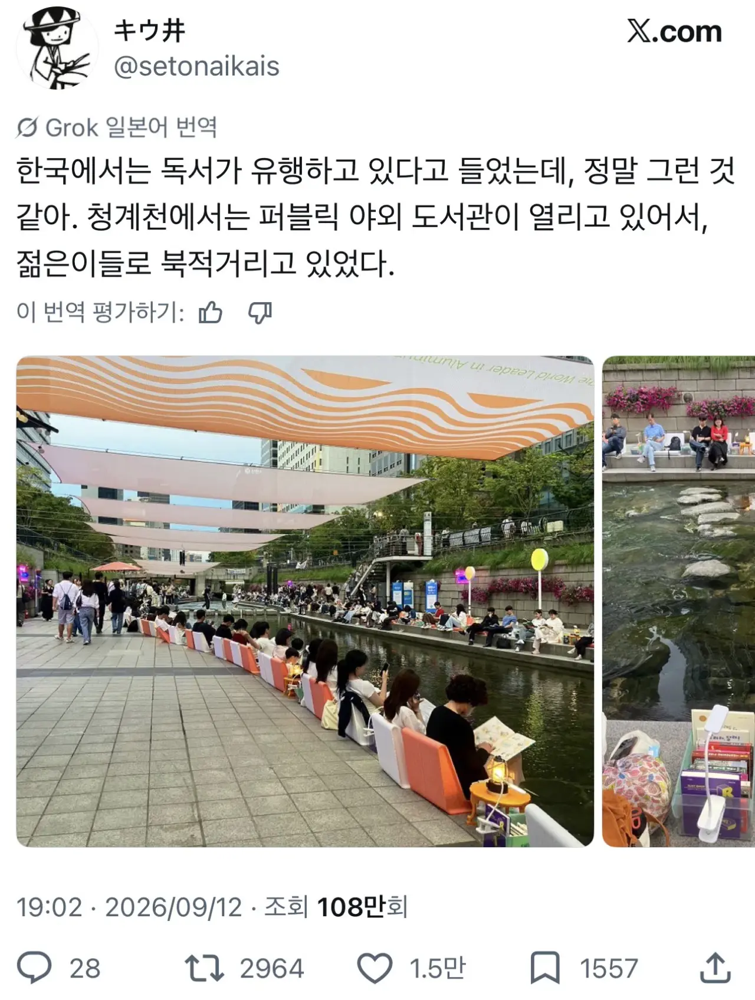
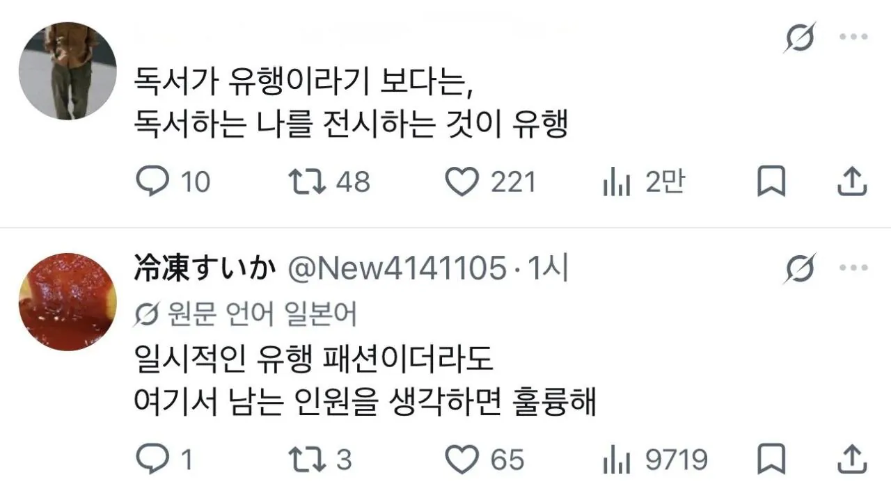

일본인이 오히려 옹호도 해주는 그림


일본인이 오히려 옹호도 해주는 그림
광화문쪽도 책많이 보더라 밖에서
책이 아니어도 무언가 읽고 있다면 오케이 입니다
그냥 보기 좋은데
척하는게 어디야 보기좋네 난 척도안함
둘 다 맞는 말이구만
책 막상 읽으면 끝까지 읽는데 뭔가 돈주고 사기도 애매하고 실패하기는 또 싫은데 그 시간들여서 보기엔 시간 아깝고 영상으로 만들어진거 있으면 그런것만 보고 그래도 막상 읽으면 또 그것만의 재미가 있는 건 아는데 귀찮고
전자북 사려고하는데 뭐로사지
패션이라도 좋고 허세라도 좋아요. 제발 책 좀 읽어주세요. 시장이 쪼그라들어욧!!! 활자 인구 자체가 줄어든다고!
-지나가는 웹소설 작가가.
문?
시리즈
남성향?
ㅇㅇ남성향 현대판타지
훈타물?
아니. 직업물하고 회사(재벌)물.
19년부터 박치기하다 성공했구나. 대단하네.
전업 됨?
ㅇㅇ6년 전부터 전업임. 운좋게 첫작 잘 풀려서 전업했어. 지금도 글쓰는 중.
부럽따!!
고마움ㅋㅋㅋㅋㅋㅋ 읽어주는 사람들 덕분이지. 그 사람들을 기쁘게 하는게 내 일이고.
난 전업을 꿈꾸는 망생이라.. 그저 리스펙
아 같은 업계였구만. 화이팅이야. 할 수 있따... 나라면...!
ㅋㅋㅋ고맙. 선배님도 건필해용
꼭 좋은 현상에 저렇게 초치는 찐따새끼들이 있어요 하여ㅡㄴ
사서들은 안 읽는데 책 대출하고 반납하는 것도 좋으니
제발 빌려가달라더라...
폼이라도 들고 읽는게 중요한거지..
그딴건 집에서 혼자하고 공공장소에서는 엉밑 돌핀팬츠나 보여줬으면...
하아 한남씨...
우우 한남주거
원래 독서 말고도 그렇게 시작하는것들이 많지
생각보다 저렇게 밖에서 읽으면 잘 읽힘
폼도 잡고 책도 읽고 일석이조
책이란게 뭔가 꼭 자기방 책상에서만 눈에 들어오고 머릿속에 박히는게 아니라
ㅈㄴ 우연하고 랜덤하게 지식이 흡수가 돼서 평생 머리에 각인이 되어서 가치관과 인생이 바뀜
그래서 저런 조롱 무시하고 시도 때도 없이 어디든지 상관말고 읽는게 좋음
책 야외에서 잘읽힐때가있음
좋네
병신같이 시니컬한 커뮤 말투나 따라하면서 쿨한척 논리로 압-쌀!! 하는 자신에게 취하는것보다 저게 비교도 안되게 더 나음
나는 책 읽는게 나쁘다 이게 아니라
아 책읽는 나에 취한다 이게 꼴보기가 싫음
그리고 이제 책 안읽는 사람한테
정훈교육을 시작함
책을 읽으면 인생이 달라진다
이러면거 책 안읽으면 쓰레기 새끼 취급을 함
얼마나 대단한 책을 읽냐 이러면
쓰레기같은 정신승리 위로글 에세이이고
막상 대단하게 달라졌냐 이것도 아님
그냥 도덕적 우월감? 남한테 지랄할수 있는
프리패스권으로 독서를 하고있으니
좆같음
지금도 봐라
댓글에서 독서로 인생이 달라졌니 어쩌니
헛소리하는 새끼들 많지
진짜로 달라졌으면 돈이라도 많이벌었으면
인정하는데 보고 있으면
되도않는 강의팔이하고있고 에휴
이래서 독서한다고 지랄하는새끼는 별로 안좋아함
혼자 읽고 좋아 하는 사람은 뭐 그럴수 있다인데
책 읽는걸로 자기 올려치기하는 경우가 많긴해 ㅋㅋ
운이고 복인거 같음
그런 사람들 많이 만나거나 그런 면을 더 많이 보는 사람들은 염세적이 되는거고
자기 복 찾아가는거 같음
저스티스도 코스모스도 마쳤는데 상대적이며 절대적인 지식의 백과사전, 아직 다 못읽음, 다른거 나올때마다 찔끔대봄.
보여주기식 유행 꼴보기 싫긴한데
그 대상이 독서라면 뭐 안읽는것보다는 낫다고 샘각함
저렇게라도 읽는게 어디야
책 읽는 건 좋는데 읽는 책 꼬라지가 '20대에 읽는 ~', '서른에 읽는 뫄뫄' '마흔에 읽는 느금마' '돈 잘버는 방법' '한 권으로 끝내는 니애미 체함' '신간안온다정무해겉절이한국문학ver.9.23' 따위의 백해무익한 놈들이면 한숨이 나오기는 해 ㅋㅋ
일본은 저렇게라도 안한다는 말인데 대체 얼마나 독서율이 낮은 건지 감도 안옴
와 난 저런대서 책 읽으면 머리에 남는 내용이 없어서 못읽겠던대
방에서 혼자 읽는게 좋앙
원래 척으로 시작하는거임
이래도🙄지랄🤬 저래도🙄시발🤬 저래도🙄지랄🤬 이래도🙄지랄🤬 저래도🙄지랄🤬 앉아도🐒지랄🤬 일어서도🐥지랄🤬 숨쉬어도😶🌫️지랄🤬 나중에 한 시발 2️⃣0️⃣2️⃣0️⃣년 되가지고 여러분 반갑습니다🤚그럼 바로 폭동🚨🚨칠 거 같아요 에라이🤜😡아아악😱😱😱
진짜 저렇게 염세적인 사람 개싫음